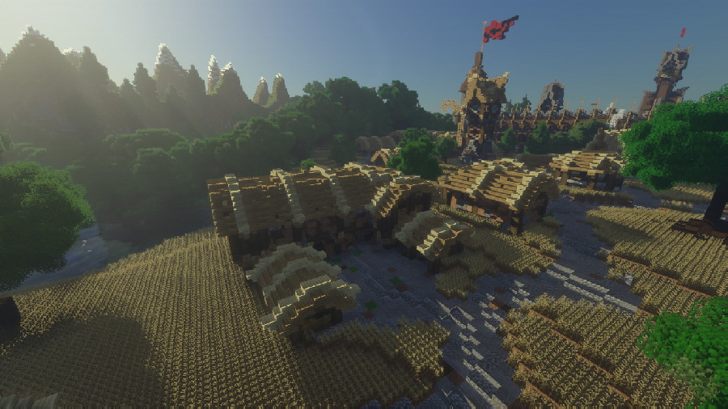
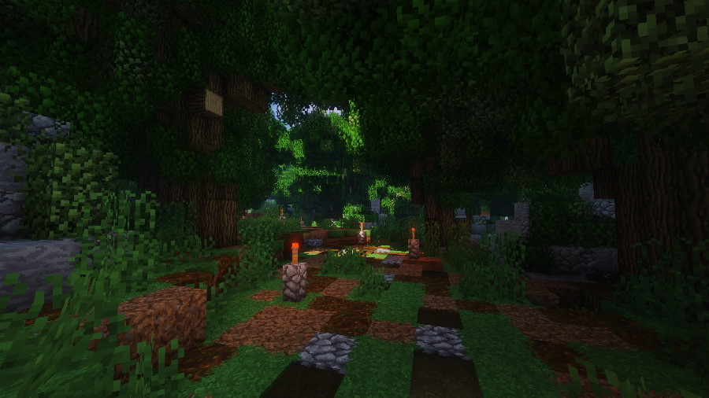
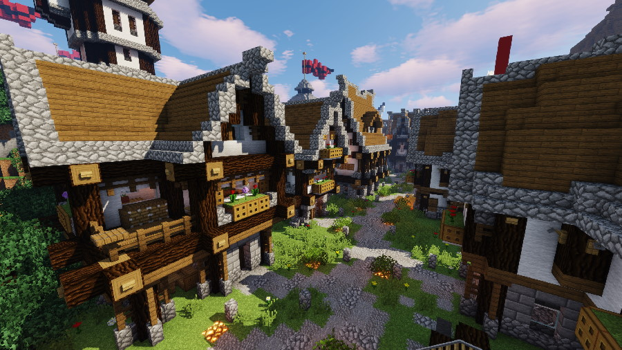
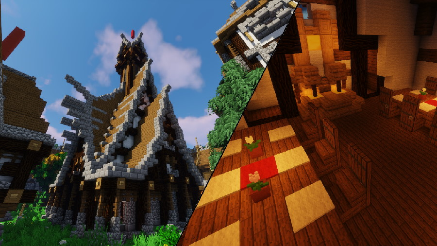
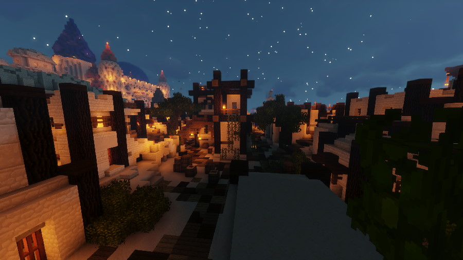

Glanom, exterieur, champs
Composition et arrangement Simon Royer, Guilhem Mazoyer
Projet Wyrd's Tales

Glanom, exterieur, forêt
Composition et arrangement Guilhem Mazoyer
Projet Wyrd's Tales

Glanom, exterieur, rue
Composition et arrangement Simon Royer
Projet Wyrd's Tales

Glanom, interieur, palais
Composition et arrangement Simon Royer
Projet Wyrd's Tales

Sayoum, exterieur, nuit
Composition et arrangement Guilhem Mazoyer
Projet Wyrd's Tales
